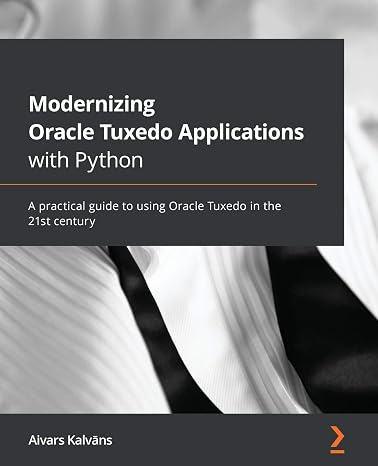

Oracle Tuxedo, scripted from Python
tuxedo-python is a Python module for writing
Oracle Tuxedo clients and servers. It wraps the X/Open
XATMI API with pybind11 and maps Tuxedo's typed buffers onto Python
types: FML32 becomes a dict, STRING
a str, CARRAY a bytes. Servers are
Python classes advertised with tpadvertise(), booted by
tmboot like any C server, and they can run multithreaded
with per-thread initialization.
The same module runs against Fuxedo, the open source alternative to Oracle Tuxedo, so code written on this module is not tied to one vendor's middleware.
>>> import tuxedo as t
>>> t.tpinit(None)
>>> rval, rcode, data = t.tpcall('.TMIB', {
... 'TA_CLASS': 'T_SVCGRP', 'TA_OPERATION': 'GET'})
>>> data['TA_SERVICENAME']
['GETRATE', 'GETRATE', 'RELOAD_10', ...]tpcall() and tpacall()/tpgetrply()
return a (rval, rcode, data) tuple instead of raising on
TPFAIL, because a failed service often returns the most
interesting data. Errors raise XatmiException or
Fml32Exception with a .code you compare against
TPENOENT, TPESYSTEM, TPETIME,
TPESVCFAIL and the rest of the TPE* codes.
#!/usr/bin/env python3
import sys
import tuxedo as t
class Server:
def tpsvrinit(self, args):
t.tpadvertise('ECHO')
return 0
def ECHO(self, args):
return t.tpreturn(t.TPSUCCESS, 0, args)
if __name__ == '__main__':
t.run(Server(), sys.argv)Mark the file executable, list it in UBBCONFIG like a C
server, and tmboot starts it. tpsvrinit,
tpsvrdone, tpsvrthrinit, and
tpsvrthrdone map to methods on your object, so a
MINDISPATCHTHREADS=4 server gets a real per-thread setup
hook.
Every XATMI entry point the module exposes, for the searchers and the curious:
Calls:
tpcall tpacall tpgetrply tpforward tpreturn tpunadvertise
Lifecycle:
tpinit tpterm tpappthrinit tpappthrterm tpsuspend tpresume
tpgetctxt tpsetctxt run
Advertise:
tpadvertise tpadvertisex (TPSINGLETON TPSECONDARYRQ)
Transactions:
tpbegin tpcommit tpabort tpgetlev xaoSvcCtx
Buffers:
tpalloc tprealloc tpfree tpexport tpimport
Admin:
tpadmcall (offline MIB) .TMIB (live MIB, T_DOMAIN T_MACHINE T_GROUP
T_SERVER T_SERVICE T_SVCGRP T_QUEUE)
Queues:
tpenqueue tpdequeue TPQCTL
Events:
tppost
FML32:
Fldid32 Fname32 Fldno32 Fldtype32 Fmkfldid32 Fboolpr32 Fboolev32
Ffloatev32 Ffprint32 Fextread32
Logging:
userlog
Flags and constants (109, mirroring the C headers): TPNOFLAGS TPNOBLOCK TPNOREPLY TPNOTRAN TPNOTIME TPGETANY TPNOCHANGE TPNOCOPY TPMULTICONTEXTS TPSUCCESS TPFAIL TPEXIT TPEABORT TPEBADDESC TPEBLOCK TPEDIAGNOSTIC TPEEVENT TPEHAZARD TPEHEURISTIC TPEINVAL TPEITYPE TPELIMIT TPEMATCH TPEMIB TPENOENT TPENOSECONDARYRQ TPENOSINGLETON TPEOS TPEOTYPE TPEPERM TPEPROTO TPERELEASE TPERMERR TPESVCERR TPESVCFAIL TPESYSTEM TPETIME TPETRAN TPGOTSIG TPEX_STRING TPABSOLUTE TPACK TPACK_INTL TPCONV TPBLK_NEXT TPBLK_ALL TPBLK_SECOND TPBLK_MILLISECOND TPQBEFOREMSGID TPQCORRID TPQMSGID TPQPEEK TPQWAIT TPQGETBYMSGID TPQGETBYCORRID TPQTOP TPQPRIORITY TPQREPLYQ TPQFAILUREQ TPQTIME_ABS TPQTIME_REL TPQEXPTIME_ABS TPQEXPTIME_REL TPQEXPTIME_NONE TPQQOSPERSISTENT TPQQOSNONPERSISTENT TPQQOSDEFAULTPERSIST TPQDELIVERYQOS TPQREPLYQOS FLD_STRING FLD_CARRAY FLD_CHAR FLD_SHORT FLD_LONG FLD_FLOAT FLD_DOUBLE FLD_FML32 BADFLDID QMEINVAL QMEOS QMESYSTEM QMEPROTO QMENOSPACE QMENOMSG QMEINUSE QMEINVHANDLE QMEBADQUEUE QMEBADMSGID QMEBADRMID QMENOTOPEN QMENOTA QMENOTOPEN QMESHARE QMERELEASE QMEABORTED MIB_PREIMAGE MIB_LOCAL MIB_SELF TAOK TAPARTIAL TAUPDATED
FML32 maps to a dict of field name to list of values;
occurrences are lists, single values become one-element lists on the way
back. Nested FLD_FML32 fields map to nested dicts, so a
VIEW32-shaped payload or a TA_* MIB row reads
like JSON. tpexport() and tpimport() round-trip
buffers through bytes for storage or wire transfer, with
TPEX_STRING base64 when you need text.
Build against an Oracle Tuxedo 12.2.x or 22.1 installation by pointing
TUXDIR at it, or against Fuxedo for a license-free stack; the module,
the demos, and the servers behave the same. On 12.x, if the loader
complains that libengine.so requires an executable stack,
run execstack -c $TUXDIR/lib/libengine.so once (the header
is an artifact, the library does not execute on the stack).

There is a book: Modernizing Oracle Tuxedo Applications with Python by Aivars Kalvāns. It builds real services on this module: HTTP APIs inside Tuxedo servers, caches, MIB administration, global transactions, and /Q pipelines.
The same author builds eBPF and /proc based monitoring for Tuxedo IPC queues (ipcqmon) and runs hands-on Tuxedo training that goes well past the official documentation: internals, system-call level behavior, and almost two decades of keeping C++ Tuxedo applications alive.